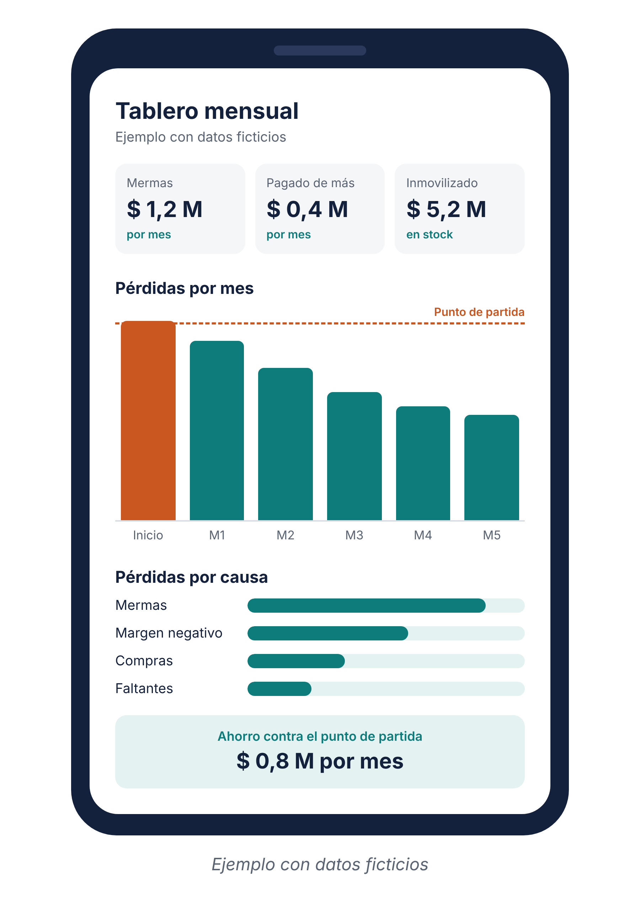

Encontramos dónde pierde dinero su empresa, lo medimos en pesos y lo reducimos.
Trabajamos con los datos que su empresa ya tiene, implementamos las correcciones con su equipo y medimos el ahorro cada mes contra el punto de partida.
Señales de que su empresa pierde dinero
- «Vendo más que el año pasado y me queda menos.»
- «El sistema dice que hay stock y en el depósito no está.»
- «No sé con qué productos gano y con cuáles pierdo.»
- «Le compro siempre al mismo proveedor y no comparo precios.»
- «Tengo mercadería parada desde hace meses.»
- «Los pedidos salen tarde y me entero por el reclamo.»
Cada una de estas frases señala una pérdida que se puede medir.
Dónde se pierde el dinero
Cada peso que se pierde en compras, stock, mermas o márgenes sale de la ganancia.
- ComprasSe pierde enPrecios pagados de más
- StockSe pierde enFaltantes y mercadería parada
- Producción y ventaSe pierde enMermas y margen negativo
- Entrega y cobroSe pierde enDemoras entre pedido y entrega
Qué hacemos
Medir
Calculamos en pesos por mes las mermas y los faltantes de stock, lo que se paga de más por el mismo artículo, el margen de cada producto y de cada cliente, el dinero parado en mercadería que no rota y las demoras entre el pedido y la entrega.
Corregir
Escribimos los procedimientos, capacitamos a su equipo y seguimos cada corrección hasta que se cumpla.
Controlar
Cada mes medimos el ahorro en pesos contra el punto de partida.
Cómo trabajamos
Usted decide hasta qué etapa avanzar. Cada etapa paga tiene su alcance y su precio acordados por escrito antes de empezar.
Chequeo de pérdidas
Sin costoEn líneaUsted responde preguntas de sí o no sobre su empresa. En 48 horas hábiles recibe un informe con las pérdidas que su empresa probablemente tiene y lo que haría falta para medirlas.
Reunión de devolución
Sin costo30 a 60 minutosPor videollamadaRepasamos el informe y lo que le preocupa. Antes de recibir cualquier dato de su empresa firmamos un acuerdo de confidencialidad.
Medición de una pérdida
Paga2 a 3 semanasPrecio cerradoMedimos en pesos una pérdida concreta, con su evidencia y su causa.
Diagnóstico integral
Pago4 a 6 semanasMedimos todas las pérdidas y entregamos el mapa del proceso y un plan a 30, 60 y 90 días, con responsables e indicadores.
Corrección acompañada
PagaEn módulos mensualesEscribimos los procedimientos, capacitamos a su equipo y seguimos cada corrección hasta que se cumpla.
Control mensual
Abono mensualRepetimos la medición cada mes y le entregamos un informe con el ahorro en pesos contra el punto de partida.
Las etapas pagas se hacen con contrato escrito y factura.
Qué recibe
- Un informe con cada pérdida en pesos por mes y su causa.
- Un mapa del proceso que marca dónde se pierde dinero.
- Un plan a 30, 60 y 90 días, con responsables e indicadores.
- Un tablero de indicadores que se abre desde el celular, sin instalar nada ni pagar licencias.
- Un informe mensual del ahorro.

Qué hacemos distinto
No le pedimos informes armados: trabajamos con lo que su sistema y su contador ya tienen.
No terminamos en un informe: implementamos las correcciones con su equipo.
El resultado se mide en pesos, cada mes, contra el punto de partida.
Sus datos
- Firmamos un acuerdo de confidencialidad antes de recibir cualquier información.
- Su información se guarda en una carpeta de acceso restringido y se borra al terminar el trabajo, con confirmación por escrito.
- Nada se publica sin su autorización escrita.
Quiénes somos
Somos dos socios: un ingeniero industrial y un licenciado en administración.
Con quién trabajamos
Trabajamos con pymes de la Argentina, de cualquier sector.
No trabajamos con
- Negocios atendidos solo por su dueño o con : las correcciones las implementa el equipo de la empresa.
- Empresas que no registran sus ventas ni sus compras, en un sistema o en comprobantes: sin registros no hay punto de partida.
- Empresas que no pueden asignar una persona de referencia para el trabajo.
Preguntas frecuentes
Datos que necesitamos
Los reportes que su sistema ya genera (ventas, compras y stock) y sus facturas, tal como salen, sin retocar. Si su empresa no tiene sistema, trabajamos con las facturas.
Si falta un dato
Si su empresa no registra un dato necesario, primero se registra durante dos a cuatro semanas y después se calcula.
Modalidad de trabajo
A distancia: por videollamada y con la información que su empresa nos envía.
Precio
El chequeo y la reunión no tienen costo. El diagnóstico integral cuesta . Cada etapa paga tiene su alcance y su precio acordados por escrito antes de empezar.
Etapas
No es necesario contratar todas. Cada etapa se acuerda por separado.
Confidencialidad
Firmamos un acuerdo antes de recibir cualquier dato. Su información se borra al terminar el trabajo, con confirmación por escrito.
Tiempo de respuesta
Respondemos toda consulta en 48 horas hábiles.
Hablemos de su empresa
Respondemos en 48 horas hábiles.